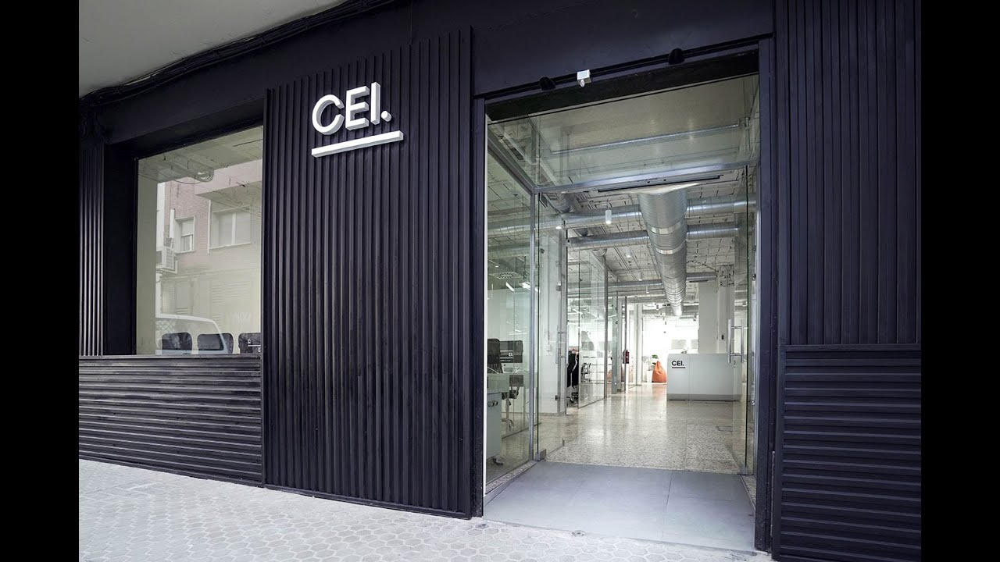
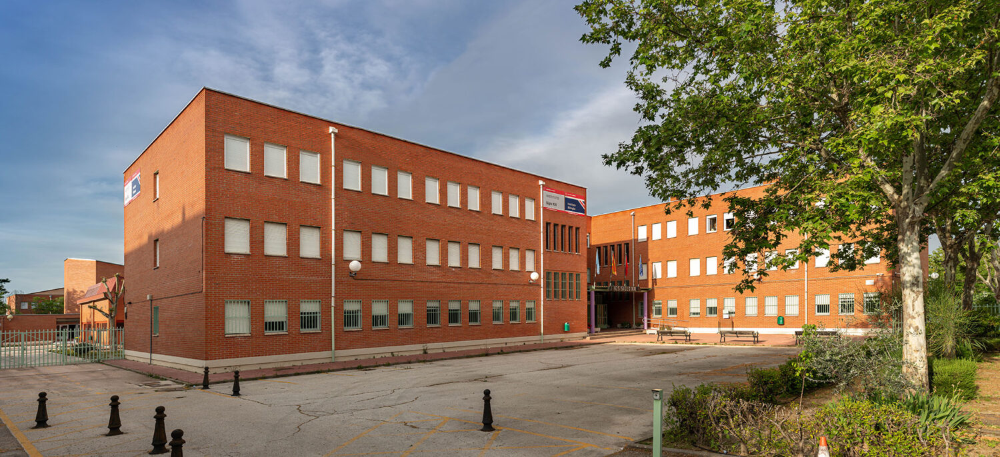

2026

Centro de estudios de innovación, diseño y marketing, donde cursé el máster en diseño y programación web. Aprendí todo lo relacionado con el diseño de páginas web utilizando HTML, CSS y JavaScript, así como programación full stack con JavaScript para la creación de aplicaciones web dinámicas con React, React Router, TypeScript y Next.js.
2019-2021

Un grado superior donde aprendí todo lo que sé ahora de realizador audiovisual, como comportarse en un plató y gestionar los métodos de realización en directo. Cómo manejar una cámara de televisión y de grabación. A editar en Avid, Davinci resolve y Adobe Premiere pro contenido audiovisual. Y por último a como regir en obras de teatro y también en platós en directo.
2023-2024
Curso de un año en el que me especialicé en locutar y audiodescribir obras de teatro, películas y series accesibles para personas con discapacidad visual, así como en subtitular contenido audiovisual para personas con discapacidad auditiva. Aprendí a utilizar Adobe Audition para locución y Aegisub para subtitulado.